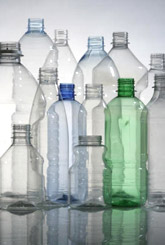
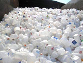
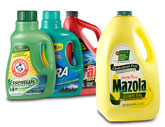
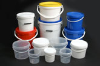
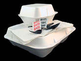
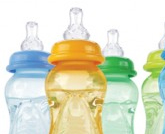

Click on the images to learn about the different types of recyclables!
Images source: http://learn.eartheasy.com/2012/05/plastics-by-the-numbers/
![ #1 – PET (Polyethylene Terephthalate)PET is one of the most commonly used plastics in consumer products, and is found in most water and pop bottles, and some packaging. It is intended for single use applications; repeated use increases the risk of leaching and bacterial growth. PET plastic is difficult to decontaminate, and proper cleaning requires harmful chemicals. Polyethylene terephthalates may leach carcinogens. PET plastic is recyclable and about 25% of PET bottles in the US today are recycled. The plastic is crushed and then shredded into small flakes which are then reprocessed to make new PET bottles, or spun into polyester fiber. This recycled fiber is used to make textiles such as fleece garments, carpets, stuffing for pillows and life jackets, and similar products. Products made of #1 (PET) plastic should be recycled but not reused.](img/1-PET-plastic.jpg){kind=link}
![ #2 – HDPE (High-Density Polyethylene) HDPE plastic is the stiff plastic used to make milk jugs, detergent and oil bottles, toys, and some plastic bags. HDPE is the most commonly recycled plastic and is considered one of the safest forms of plastic. It is a relatively simple and cost-effective process to recycle HDPE plastic for secondary use. HDPE plastic is very hard-wearing and does not break down under exposure to sunlight or extremes of heating or freezing. For this reason, HDPE is used to make picnic tables, plastic lumber, waste bins, park benches, bed liners for trucks and other products which require durability and weather-resistance. Products made of HDPE are reusable and recyclable.](img/2-HDPE-plastic.jpg){kind=link}
![#3 - PVC (Polyvinyl Chloride) PVC is a soft, flexible plastic used to make clear plastic food wrapping, cooking oil bottles, teething rings, children’s and pets’ toys, and blister packaging for myriad consumer products. It is commonly used as the sheathing material for computer cables, and to make plastic pipes and parts for plumbing. Because PVC is relatively impervious to sunlight and weather, it is used to make window frames, garden hoses, arbors, raised beds and trellises. PVC is dubbed the “poison plastic” because it contains numerous toxins which it can leach throughout its entire life cycle. Almost all products using PVC require virgin material for their construction; less than 1% of PVC material is recycled. Products made using PVC plastic are not recyclable. While some PCV products can be repurposed, PVC products should not be reused for applications with food or for children’s use.](img/3-PVC-plastic.jpg){kind=link}
![ #4 – LDPE (Low-Density Polyethylene) LDPE is often found in shrink wraps, dry cleaner garment bags, squeezable bottles, and the type of plastic bags used to package bread. The plastic grocery bags used in most stores today are made using LDPE plastic. Some clothing and furniture also uses this type of plastic. LDPE is considered less toxic than other plastics, and relatively safe for use. It is not commonly recycled, however, although this is changing in many communities today as more recycling programs gear up to handle this material. When recycled, LDPE plastic is used for plastic lumber, landscaping boards, garbage can liners and floor tiles. Products made using recycled LDPE are not as hard or rigid as those made using recycled HDPE plastic. Products made using LDPE plastic are reusable, but not always recyclable. You need to check with your local collection service to see if they are accepting LDPE plastic items for recycling.](img/4-LDPE-plastic.jpg){kind=link}
![ #5 – PP (Polypropylene)Polypropylene plastic is tough and lightweight, and has excellent heat-resistance qualities. It serves as a barrier against moisture, grease and chemicals. When you try to open the thin plastic liner in a cereal box, it is polypropylene. This keeps your cereal dry and fresh. PP is also commonly used for disposable diapers, pails, plastic bottle tops, margarine and yogurt containers, potato chip bags, straws, packing tape and rope. Polypropylene is recyclable through some curbside recycling programs, but only about 3% of PP products are currently being recycled in the US. Recycled PP is used to make landscaping border stripping, battery cases, brooms, bins and trays. However, #5 plastic is today becoming more accepted by recyclers. PP is considered safe for reuse. To recycle products made from PP, check with your local curbside program to see if they are now accepting this material.](img/5-PP-plastic.jpg){kind=link}
![ #6 – PS (Polystyrene) Polystyrene is an inexpensive, lightweight and easily-formed plastic with a wide variety of uses. It is most often used to make disposable styrofoam drinking cups, take-out “clamshell” food containers, egg cartons, plastic picnic cutlery, foam packaging and those ubiquitous “peanut” foam chips used to fill shipping boxes to protect the contents. Polystyrene is also widely used to make rigid foam insulation and underlay sheeting for laminate flooring used in home construction. Because polystyrene is structurally weak and ultra-lightweight, it breaks up easily and is dispersed readily throughout the natural environment. Beaches all over the world have bits of polystyrene lapping at the shores, and an untold number of marine species have ingested this plastic with immeasurable consequences to their health. Polystyrene may leach styrene, a possible human carcinogen, into food products (especially when heated in a microwave). Chemicals present in polystyrene have been linked with human health and reproductive system dysfunction. Recycling is not widely available for polystyrene products. Most curbside collection services will not accept polystyrene, which is why this material accounts for about 35% of US landfill material. While the technology for recycling polystyrene is available, the market for recycling is small. Awareness among consumers has grown, however, and polystyrene is being reused more often. While it is difficult to find a recycler for PS, some businesses like Mailboxes Etc. which provide shipping services are happy to receive foam packing chips for reuse. Polystyrene should be avoided where possible.](img/6-PS-plastic.jpg){kind=link}
![ #7 – Other (BPA, Polycarbonate and LEXAN)The #7 category was designed as a catch-all for polycarbonate (PC) and “other” plastics, so reuse and recycling protocols are not standardized within this category. Of primary concern with #7 plastics, however, is the potential for chemical leaching into food or drink products packaged in polycarbonate containers made using BPA (Bisphenol A). BPA is a xenoestrogen, a known endocrine disruptor. Number 7 plastics are used to make baby bottles, sippy cups, water cooler bottles and car parts. BPA is found in polycarbonate plastic food containers often marked on the bottom with the letters “PC” by the recycling label #7. Some polycarbonate water bottles are marketed as ‘non-leaching’ for minimizing plastic taste or odor, however there is still a possibility that trace amounts of BPA will migrate from these containers, particularly if used to heat liquids. A new generation of compostable plastics, made from bio-based polymers like corn starch, is being developed to replace polycarbonates. These are also included in category #7, which can be confusing to the consumer. These compostable plastics have the initials “PLA” on the bottom near the recycling symbol. Some may also say “Compostable.” #7 plastics are not for reuse, unless they have the PLA compostable coding. When possible it is best to avoid #7 plastics, especially for children’s food. Plastics with the recycling labels #1, #2 and #4 on the bottom are safer choices and do not contain BPA. PLA coded plastics should be thrown in the compost and not the recycle bin since PLA compostable plastics are not recyclable. The plastics industry has conformed to regulations by applying the required codes to consumer products, but it is up to individuals to read and understand the codes. By understanding these simple classifications, we can best use plastics to our advantage while minimizing the health and disposal issues that may otherwise arise.](img/plastic-baby-bottles.jpg){kind=link}